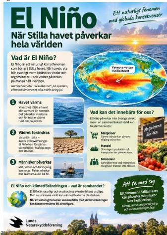
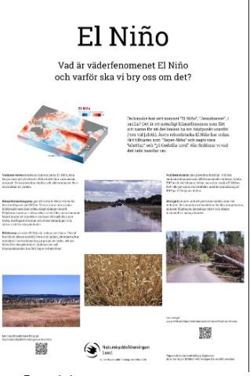

Bilder framtagna med AI: förtroende, äkthet och märkning
Förslag och analys på eget initiativ, inte beslutat av Lunds Naturskyddsförening eller Naturskyddsföreningen. Siffrorna är hämtade ur källorna och inte kvalitetssäkrade. Kontrollera mot källan innan något återges. Graderingen av hur väl varje skäl är belagt är en egen bedömning och inget forskningsresultat. Tillbaka till den korta versionen.
Kort version
Steg 1: kort version
I underlaget handlar reaktionerna på AI-bilder mer om förtroende och äkthet än om energi. I en analys av från gällde bara av kommentarer själva sakfrågan. Tonen var ändå inte enbart negativ: de flesta kommentarerna var neutrala, fler var kritiska än stödjande, och märkning som AI-genererad var nödvändig men räckte sällan. I ett fältexperiment fick annonser märkta som AI-framtagna lägre klickfrekvens, och ideella organisationer straffades hårdare än företag. För en miljöorganisation finns två skäl till: WWF Danmarks AI-bilder fick anklagelser om grönmålning (greenwashing) trots illustrationsstil och märkning, eftersom AI sågs som oförenligt med miljövärderingarna, och en tysk naturstiftelse varnar för att AI-djurbilder ofta är fel i detaljerna. Bedömning: troligen extra känsligt, men underlaget är indirekt. Jag har inte hittat någon studie av naturorganisationer eller av svenska medlemmar.
Frågan
Är bilder som AI har tagit fram extra känsliga för en miljöorganisation, och vad handlar reaktionerna i så fall om? Frågan kom ur samma styrelsediskussion som energifrågan (se Bakgrund och användning), men energin per bild är liten: en bild motsvarar i mätningen i en mikrovågsugn på 1 000 W (Tabell 1 i analysen). Om reaktionerna ändå är starka måste de bero på något annat.
Bilderna: två som frågan gällde och en tredje
Frågan började med två förslag till en affisch om El Niño, till ett bord på en adventsmässa. Det ena togs fram med AI och det andra med traditionella metoder i ett dataprogram. Här finns också ett tredje förslag: en affisch som AI ritat som vektorgrafik, med källor och i högre kvalitet så att texten går att läsa. Bilderna växlar av sig själva. Klicka på en bild, eller på Förstora, för att se den större och zooma. Varje bild går att länka till (se nedan).





Varje bild har en egen länk. #bild1 visar förslag 1, #bild2 förslag 2 och #bild3 förslag 3, till exempel https://kentlundgren.github.io/AI-teknik/AI_anvandning/NF/bilder.html#bild3. Lägger du till -stor öppnas bilden förstorad: #bild3-stor. Knappen Kopiera länk under varje bild ger adressen, och adressfältet följer det du väljer. Bildfilerna och PDF-filerna har också egna adresser (länkarna Bildfilen, PDF, A4 och PDF, A3).
Frågan till riksorganisationen hade två delar. Den ena gällde om man bör avstå från AI på grund av elen och vattnet. Den andra gällde formen: om AI-förslaget är mer ungdomligt och slagkraftigt, eller för grällt och oseriöst. Det är alltså inte bara förtroende och energi som frågan gällde utan också smak (F-47).
Hur förslag 1 togs fram (verktyg och antal försök) är inte känt här, så dess energi går inte att ange. En genererad bild motsvarar i genomsnitt i en mikrovågsugn på 1 000 W, i en mätning av äldre modeller (Tabell 1 i analysen).
Förslag 3 är inte en genererad bild på samma sätt som förslag 1. Det är kod (SVG) som en språkmodell har skrivit, där koden sätter texten. Därför går texten att läsa och bilden kan förstoras utan att bli suddig, och energin är den för text och inte för en bild. Den är inte uppmätt separat. Faktapåståendena i affischen kommer ur tre källor: tidsintervallen, vindarna, uppvällningen och namnet ur och , och nederbörden, kopplingen till Sverige och klimatet och läget hösten 2026 ur . Tvärsnitten är schematiska. Faktan är genomgången mot källorna men inte granskad av en sakkunnig (F-48), och affischen är ett förslag, inte en officiell affisch.
Förslag 3 är gjord för att skrivas ut. Den är stående A4 (210 × 297 mm), och samma ritning skalar exakt till A3 (297 × 420 mm), så PDF-filerna A4 (67 kB) och A3 (67 kB) har exakt sidstorlek. Brödtexten är cirka 10 pt på A4 och cirka 14 pt på A3. Det finns en blank marginal på cirka 10 mm runt om, så att vanliga skrivare får med allt. Färgerna är ljusa och de mörka ytorna små, eftersom stora mörka ytor går åt mer bläck eller toner. Affischen är inte provtryckt på en riktig skrivare (F-49).
Förslag 1 och 2 är av låg upplösning, utdragna ur en vidarebefordrad PDF, och visas för att visa vad frågan gällde. Bättre bilder och tillstånd att visa dem är en förbättringspost (F-46).
Vilka skäl finns, och hur väl är de belagda?
Analysen i korthet nämner fem skäl som en hypotes (Bilder: fler skäl än energi). Här prövas de mot underlaget, med tre skäl till. Graderingen i den sista kolumnen är en egen bedömning av hur väl underlaget bär skälet, inte av hur viktigt det är.
Tonläget i de kommentarer som rapporten analyserade, enligt : neutrala, kritiska, stödjande och ambivalenta. Neutrala kommentarer var vanligast i kampanjer utan redovisning av AI, där publiken ägnade sig åt att leta efter bevis för AI i stället för att bedöma den. Kritiken är alltså inte enhällig: stöd förekom särskilt när AI användes för att skydda människor från att fotograferas.
| Skäl | Vad underlaget säger | Säkerhet i underlaget |
|---|---|---|
| 1. Resurser (energi) | En bild kräver mer än en textfråga, men per bild är det litet (se ovan). Rapporten beskriver att AI:s energianvändning i WWF:s och charity:waters kampanjer sågs som oförenlig med hållbarhetsbudskapet, och att kritiken gällde mer konflikten mellan medel och budskap än AI i sig. Synen var delad: en kommentar hävdade att en enkel YouTube-video använder mer energi än en AI-fråga. Se . | Medel. Ett återkommande tema i kommentarerna, men kommentarerna är få och inte representativa |
| 2. Trovärdighet och äkthet | Av kommentarer gällde AI-etik (äkthet, samtycke, vilseledning, arbete, miljökostnad) och utförande och kvalitet, och bara sakfrågan, enligt . I ett fältexperiment (N = ) var klickfrekvensen lägre för annonser märkta som AI-framtagna, och i ett experiment med N = fick ideella organisationer större negativa effekter än företag, enligt . | Medel. Två olika underlag pekar åt samma håll. De gäller i huvudsak hjälporganisationer och annonser, inte naturorganisationer och inte bara bilder |
| 3. Konstnärer och fotografer | Mediaforskaren Roland Meyer sa i Amnesty-fallet att AI-bilder förminskar reportrars och fotografers arbete och att deras bilder sannolikt använts för att träna programmet, enligt . Bond nämner att kritiker pekar på hotet mot lokala fotografers och filmares försörjning, enligt . Rapporten återger kommentarer av samma slag, till exempel att en konstnär kunde ha anlitats. | Låg. Argument som återges i nyhetstext, på en branschorganisations sida och som kommentarer. Ingen mätning av hur det påverkar förtroendet |
| 4. Utseende: bilderna känns igen | Rapporten beskriver att dåligt utförande minskade trovärdigheten medan välgjorda bilder väckte beundran. Bond skriver att bilder som är gjorda för att se ut som fotografier väcker mest granskning. Men WWF Danmarks illustrerade stil skyddade inte mot kritiken, så det är inte bara fotorealism som väcker reaktioner. En tysk naturstiftelse säger dessutom att experter lätt ser felen i AI-djurbilder medan lekmän ofta inte gör det, enligt . Skälet gäller alltså inte alla läsare. | Låg. Underlagen pekar delvis åt olika håll |
| 5. Misstro mot verkliga bilder | Organisationen WITNESS varnade i Amnesty-fallet för att AI-bilder av verkliga händelser lägger bevisbördan på journalister och människorättsförsvarare och kan användas för att avfärda äkta bilder som falska, enligt . Mediemyndigheten beskriver att fotografiet länge setts som en sann avbild och att AI-bilder som liknar foton, så kallade promptografier, utmanar det, enligt . | Låg. Argument och en allmän beskrivning, ingen mätning av effekten på en organisations förtroende |
| 6. Märkning räcker inte | Av bilderna var märkta som AI-genererade. Rapporten beskriver märkningen som en nödvändig grund men sällan tillräcklig: den kunde mildra men inte ta bort misstron. Författarna vet inte hur eller när märkningen gjordes. Där AI inte redovisades gällde kommentarerna att hitta bevis för AI. Det är alltså inte slutsatsen att AI bör döljas. Se och . | Medel. En rapport som primärkälla och en sammanfattning, men märkningens utformning och tidpunkt är okänd |
| 7. Naturbilders riktighet | Heinz Sielmann Stiftung säger att AI-djurbilder ofta saknar artspecifika drag och att proportioner och färgteckning kan vara fel. Stiftelsen rekommenderar tydlig märkning och expertgranskning, och att den som vill förmedla kunskap om natur använder yrkesfotografers bilder, enligt . | Låg. Stiftelsens varning återgiven i nyhetstext. Stiftelsens egen text är inte läst (F-44) |
| 8. Skydd av personer och stereotyper | Amnesty uppgav att AI-bilderna skulle skydda demonstranter som riskerade repressalier, och rapporten och Bond beskriver att givare ändå ofta väljer «autentiska» bilder framför personens integritet. Ett annat spår är att hälsoorganisationer rapporteras använda AI-bilder av extrem fattigdom, och forskare varnar för stereotyper, enligt . Båda gäller främst bistånd och människorättsarbete. Bedömning: väger lätt för en naturorganisation som sällan avbildar utsatta personer. | Medel för att avvägningen finns, låg för att den gäller naturorganisationer |
Är det extra känsligt för en miljöorganisation?
Bedömning: troligen ja, men slutsatsen bygger på indirekta belägg. Tre saker i underlaget pekar åt det hållet:
- Ideella organisationer straffas hårdare än företag. I det femte experimentet i undvek företag kritiken för AI-användning i välgörenhetsannonser medan ideella organisationer fick tydligt större negativa effekter. Det gäller välgörenhet i allmänhet, inte miljöorganisationer särskilt.
- Medel och budskap kan krocka. Rapporten beskriver att WWF Danmarks AI-bilder, trots illustrationsstil och märkning, fick anklagelser om grönmålning när AI sågs som oförenlig med miljövärderingarna. Rapporten definierar äkthet som överensstämmelse mellan budskap, medel och moralisk insats, och kallar problemet en konflikt mellan medel och budskap. Det gäller ett fåtal kampanjer.
- Natur ska vara sann. Sielmann-stiftelsens varning gäller just bilder av arter. En naturorganisation som visar en bild av en fågel som inte ser ut som fågeln riskerar att sprida fel kunskap, och det är en annan sorts skada än att bilden är dyr i energi.
Hänger energin ihop med förtroendet?
Analysen i korthet säger att en riktlinje bör skilja resursfrågan från förtroendefrågan. För en miljöorganisation är de ändå sammanlänkade: energisiffran per bild är liten, men rapporten beskriver att kritiken mot WWF:s kampanjer handlade mer om att verktyget stred mot budskapet än om själva AI-användningen. En liten siffra är alltså inte ett svar på en förtroendefråga, och en riktlinje bör kunna svara på båda.
Vad andra organisationer har sagt eller rekommenderar
| Aktör | Vad de säger eller rekommenderar | Källa och förbehåll |
|---|---|---|
| Amnesty International (2023) | Tog bort bilderna efter kritiken för att de distraherade från budskapet. Uppgav att organisationen vid den tidpunkten inte hade en policy för eller emot, men var försiktig: bara använda när det skyddar människorättsförsvarare, inte sträva efter fotorealism och ange på bilden att den är AI-genererad. | . Amnestys svar per e-post till PetaPixel 2023, inte en aktuell policy. Dagens läge är inte kontrollerat |
| Bond, brittiskt nätverk för biståndsorganisationer (2026) | Fem råd: skriv och publicera en policy som säger när AI-bilder är lämpliga och hur de granskas och redovisas, utbilda kommunikatörerna, gå bort från fotorealism, ta med de avbildade i arbetet och berätta bredare berättelser. Rådet är inte att förbjuda AI. | . Rekommendationer från en branschorganisation, byggda på rapporten |
| Heinz Sielmann Stiftung (2025) | Tydlig märkning, expertgranskning och att den som vill förmedla kunskap om natur undviker AI-djurbilder och använder yrkesfotografers bilder. | . Återgivet i nyhetstext, stiftelsens egen text är inte läst |
| Naturskyddsföreningen och riksorganisationen | Ingen publik rekommendation hittad. | Sökningen 2026-11-12 gav ingen träff (F-40). Det betyder inte att den saknas, bara att den inte hittats |
Frågor en riktlinje om bilder måste besvara
Det här är inte en rekommendation, bara de val underlaget gör synliga. Ett förslag till riktlinje är en senare version (F-32).
- Gäller riktlinjen bilder i extern kommunikation, intern, eller båda?
- Får bilden vara fotorealistisk, eller ska den vara tydligt stiliserad eller en diagrambild? (Bond rekommenderar det senare, men WWF Danmarks illustrerade stil undgick inte kritik.)
- Ska en AI-bild alltid märkas? Märkning är en nödvändig grund men skyddar inte mot kritik, och underlaget talar inte för att dölja.
- Får en AI-bild visa arter, platser eller händelser som finns, eller bara illustrera ett begrepp? (Sielmann varnar för det förra.)
- Vilka undantag finns, till exempel för att skydda en person som inte ska fotograferas?
- Vem avgör i det enskilda fallet, och hur granskas bilden före publicering?
Vad underlaget inte visar
- Ingen studie av naturorganisationer eller av hur svenska medlemmar och givare reagerar har hittats.
- Frågan om form, om en AI-layout upplevs som ungdomlig och slagkraftig eller som för grällt och oseriös, är en smakfråga som underlaget inte mäter (F-47).
- De flesta bilderna i rapporten gäller bistånd: fattigdom var tema i av bilder, medan hade miljö som tema (alla illustrerade och märkta), enligt .
- Rapporten är en kvalitativ analys av kommentarer, inte ett experiment. Den visar vad som sägs, inte hur förtroendet eller givandet påverkas. Författarna anger själva att reaktionerna påverkas av inläggets text, plattformen, kontotypen och algoritmens sortering, att ett inlägg om WWF Danmark fick över 7 000 kommentarer som mest gällde förfrågningar om mallar, och att de inte vet hur eller när märkningen gjordes.
- Rapportens siffror är inte helt konsekventa (till exempel andelen kodade kommentarer och antalet kommentarer om kvalitet), se F-41.
- Fulltexten till är inte läst, bara abstract, och märkningen gäller AI-användning i annonser i allmänhet. Om resultaten gäller bilder särskilt är inte kontrollerat (F-42).
- Uppgifter i sökresultat om andra studier av realistiska AI-bilder av klimatkatastrofer är inte verifierade och används inte här (F-43).
- Det finns inga siffror för hur mycket AI-bilder sparar eller ger en organisation, så nyttan ställs inte mot förtroenderisken här (F-24).
Det som återstår
Det här ska undersökas bättre i kommande versioner:
Källor
Källorna som den här sidan hänvisar till, i Harvardformat. Hela förteckningen och hur varje källa kontrollerats finns på sidan Källor och logg.